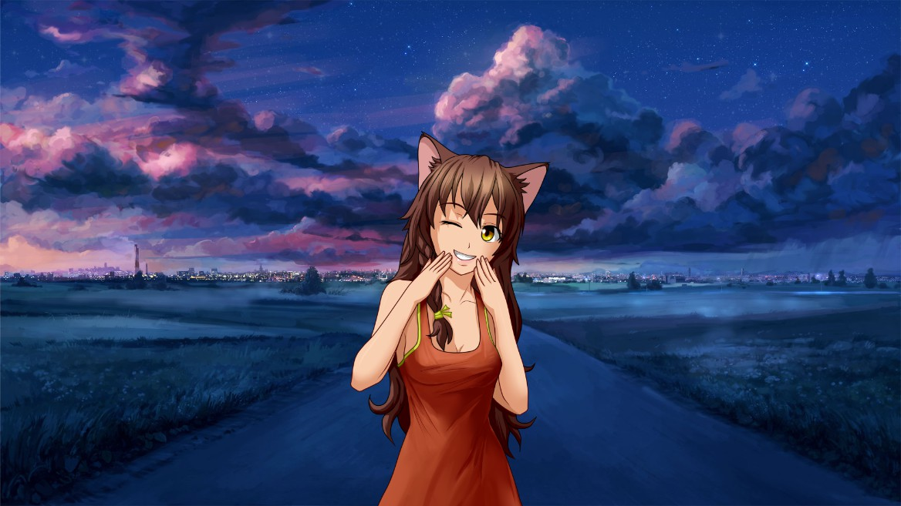

Юля
Юля — одна из главных героинь новеллы "Бесконечное Лето".
Основой для неё являлся маскот имиджборды IIchan.hk — ЮВАО-тян.
Юля — неко-девушка небольшого роста, с кошачьими ушками и хвостиком. Настоящего имени не имеет, Юлей её назвал Семён. Старается
не взаимодействовать с населением лагеря, однако, порой крадет у них разные предметы и сахар.
Впервые пытается поговорить с Семёном во время похода в шахты, и, в отличие от Шурика, главный герой от этого не теряет рассудок.
После этого начинает периодически с ним общаться. С другими персонажами на контакт не выходит.
Однако в экстренных случаях может выйти на прямой контакт с обитателями лагеря.